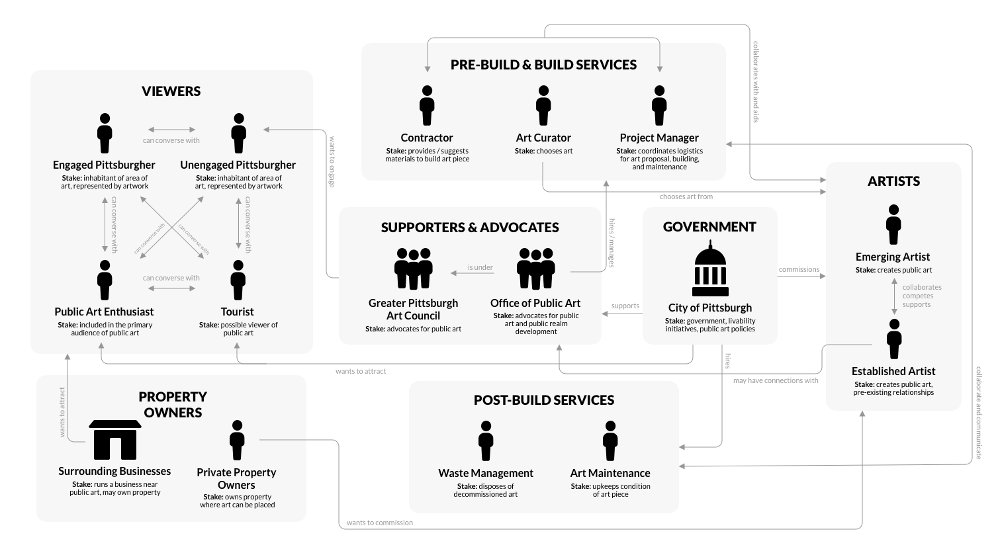

PUBLiC
Enhancing and encouraging civic engagement with public art through AR and way-finding technologies
-
Background
-
Public art has been shown to increase the livability of urban spaces as well as resident happiness, assuming that the community is engaged with the art pieces. We found in our research that civic engagement was low, therefore decreasing the effectiveness of public art pieces. PUBLiC is a mobile application designed to increase civic engagement with Pittsburgh public art pieces. Below you will find the research we conducted and process we designed by in order to create the application, PUBLiC.
-
Overview
-
For the first half of the duration, we focused on the research of the domain, which in this case was public art in Pittsburgh. The latter half of the duration, we designed a solution to a problem we discovered during the former half of the semester. My team decided to address the problem of civic engagement with Pittsburgh public art.

-
Research
-
First, my team and I gathered as much information about the public art sphere through exploring the internet for available information and studies on urban public art. We then interviewed relevant stakeholders and created the following stakeholder maps and customer journey maps.
-

Stakeholder Map
-
Customer Journey Map
-
Additionally from our semi-structured interviews, we synthesized the sentiments of many urban residents towards public art via affinity diagramming.
-
Affinity Diagram from semi-structured interviews
-
Synthesizing all these research findings, we found a few key insights:
Insight 1
- People often don’t talk about public art because they are disinterested, believe other people are disinterested, and/or feel like they don’t know enough about art.
Insight 2
- People think art in general is a subjective, personal experience not to be influenced by their own and others’ opinions, thus they cannot talk about it with other people in order to not ruin their experience or impose their own thoughts onto them.
Insight 3
- There is a complex mutual interaction between one’s prior experience and an individual art piece that molds one’s interpretation of public art.
Insight 4
- There exists a desire for conversation about public art, but often times no one is initiating that conversation.
-
Exploration
-
We first created several storyboards to user test and see how people felt about some of our initial solutions. During this process, we considered to what degree to incorporate technology into our solution.
-

-
After speed dating these storyboards with several users and some of our stakeholders, we saw that an issue of privacy and purity of experience arose with the introduction of technology into the public art experience. Thus, our team decided to create a mobile application that enables the use of a user's camera to identify public art piece while also providing a centralized place for them to discover the story behind public art pieces and communicate with the artist.
-
Iteration
-
We started with sketches and began prototyping the application through Figma at first with lower-medium fidelity and then onto higher fidelity.
-
Reflection
-
As a result of this project, I was able to explore a multitude of methodologies used today in the field of user research. Additionally, one of the greater lessons I’ve learned from this project is how people work and how to work with people. Never before was I so challenged in a group setting to really push forward ideas and be proactive in developing trains of thought or conversation to go deeper than surface level. I hope to use the same methods I used in this project to create impactful, innovative, and purposeful things in the future — whatever that may look like. I hope to infuse purpose and deep thinking into all of my designing.